Bestemmingen in eigen land
Bestemmingen in Nederland
Om niet te vergeten heb ik ook nog wat leuke bestemmingen gevonden uit ons eigen kikkerlandje. Want ons Nederland kan ook mooi zijn.
Dit is de site google
Limburg
Sittard
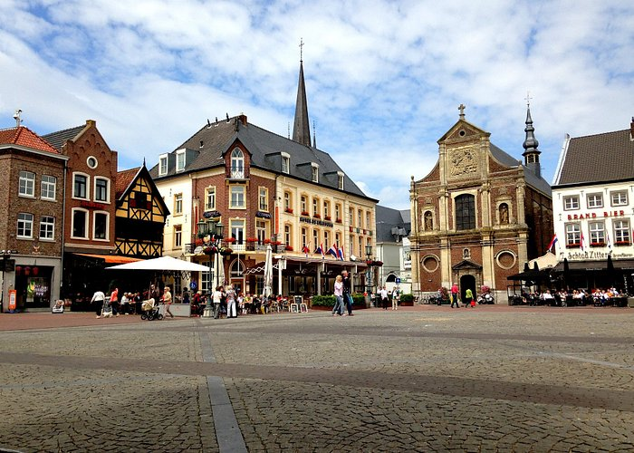
Limburg staat bekend om zijn authentieke dorpjes en glooiende landschap.
Ook kan je in Limburg verschillende dingen ondernemen of doen zoals:
- Een bezoekje brengen aan een van de kathedralen in Sittard, zoals de Basiliek.
- Voor de kusntliefhebbers kan je ook en bezoekje brengen aan museum hedendaagse kunst De domijnen.
- Vind je het leuk om ene Escape room te doen, neem dan een kijkje bij Escape centrum Limburg.
Maar vergeet natuurlijk niet om de stad ook een beetje te verkennen.
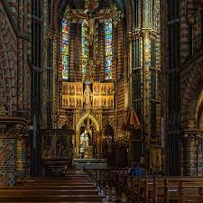
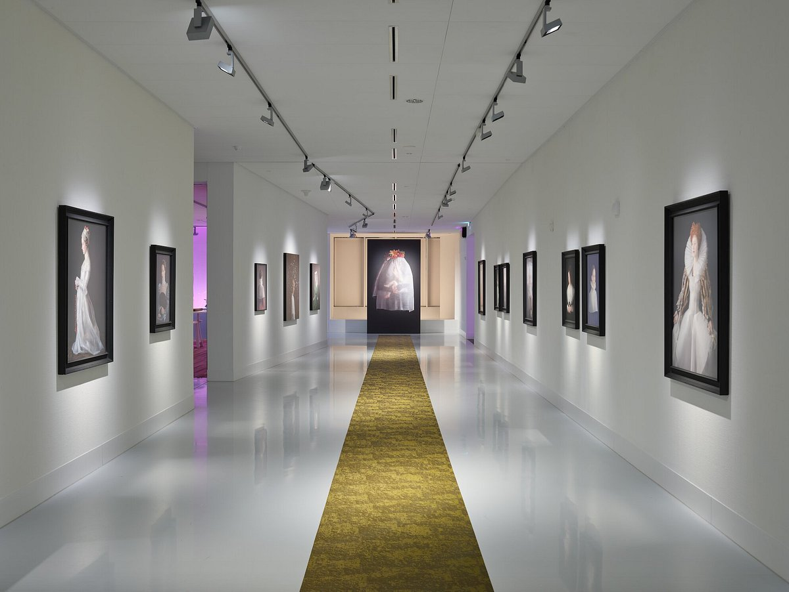
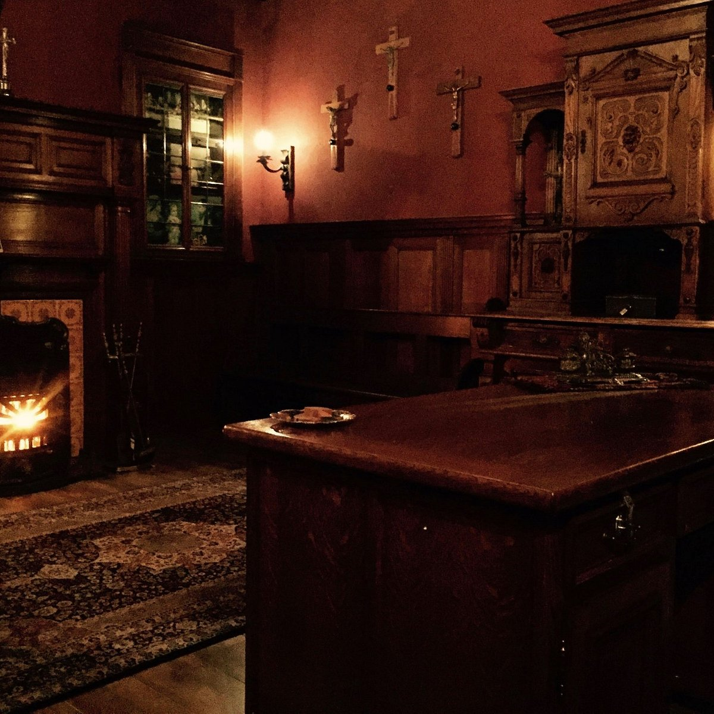
Waddeneilanden
Ameland
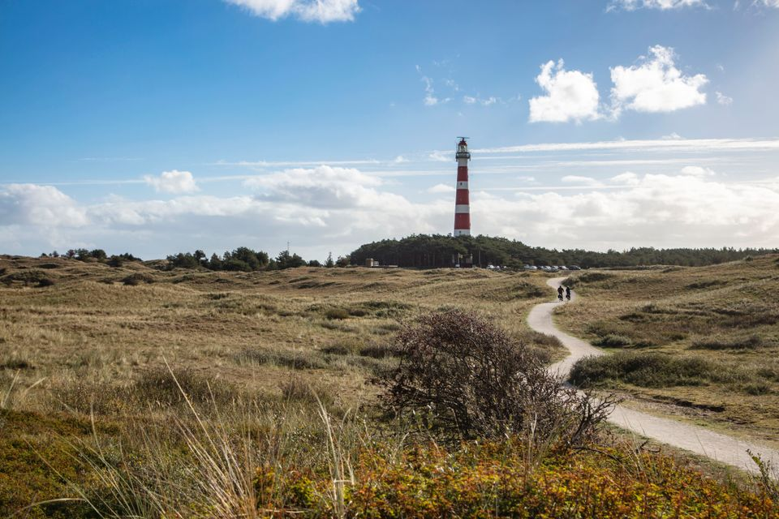
Ook in Nederland hebben wij onze eigen eilanden, waar je lekker naartoe kan gaan om even lekker uit te rusten. Of natuurlijk om lekker te kunnen fietsen.
Een aantal leuke dingen om te doen zijn op Ameland bijvoorbeeld zijn:
- Bezoeken van de vuurtoren en deze beklimmen tot aan de top. Dit is echt een aanrade voor mensen die geen last hebben van hoogtevrees.
- Lekker uitwaaien op het strand van Ameland. Ameland heeft prachtige stranden waar je in de zomer lekker kan zonnen en in de winter/herfst lekker even kan uitwaaien.
- Breng een bezoekje aan de Amelander bierbrouwerij en geniet lekker van het proeven van bier.
 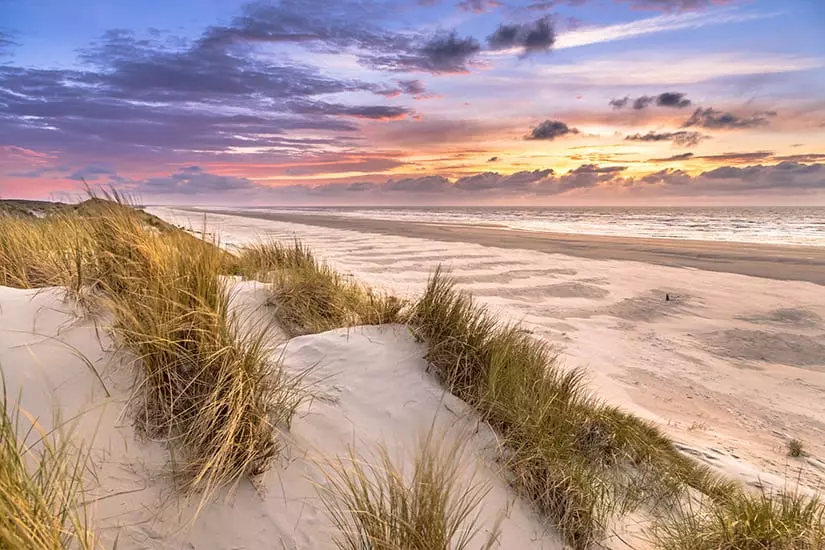
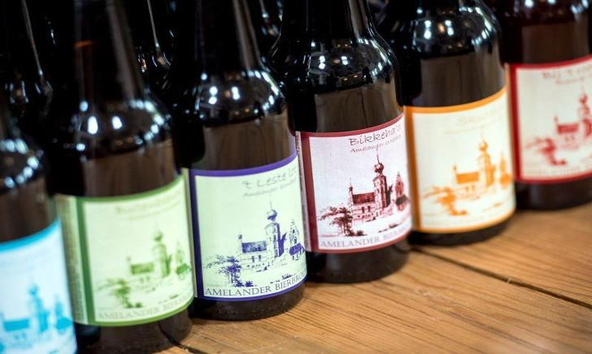
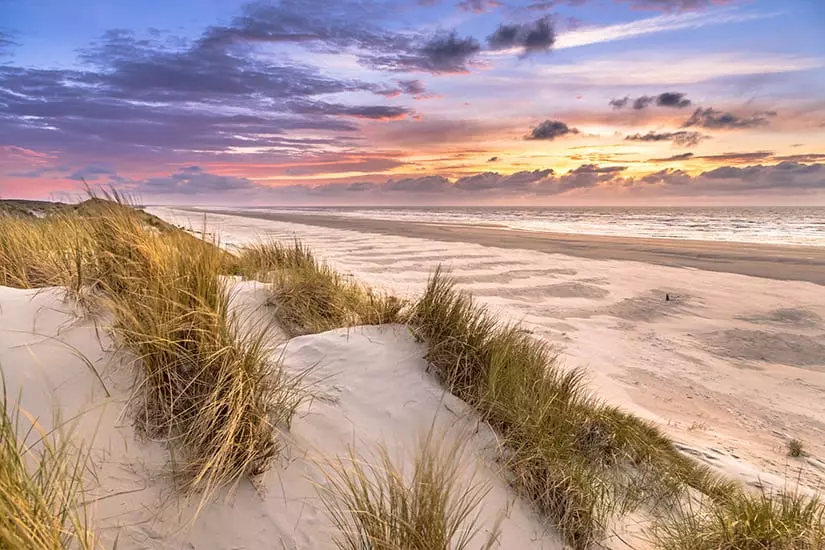
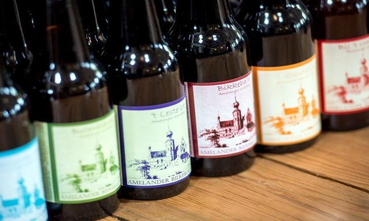
Zeeland
Vlissingen
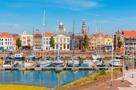
Vlissingen is een schilderachtige stad gelegen aan de kust en heeft prachtige stranden.
Een aantal aanraders om te doen in Vlissingen zijn:
- Maak een stadswandeling door Vlissingen en de haven van Vlissingen. En ontdek de maritieme geschiedenis. Loop langs de Sint Jacobskerk en door het Bellamypark.
- Neem en kijkje in het maritiem muZEEum in Vlissingen en leer over de zeeuwse schaapvaart.
- Maak een mooie wandeling in het Nollebos in Vlissingen.
 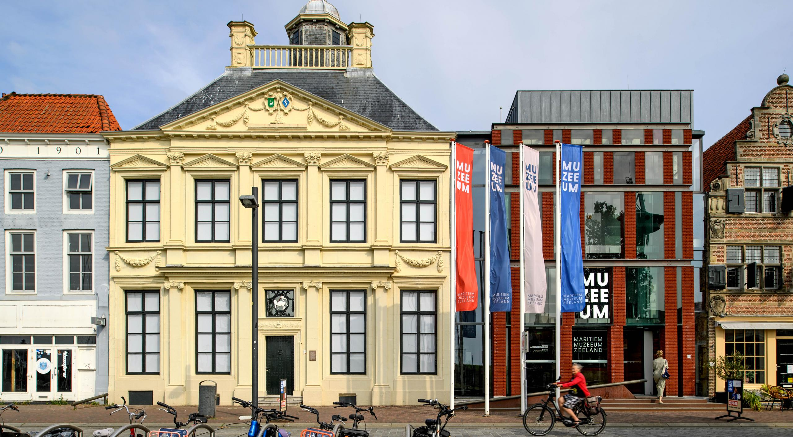
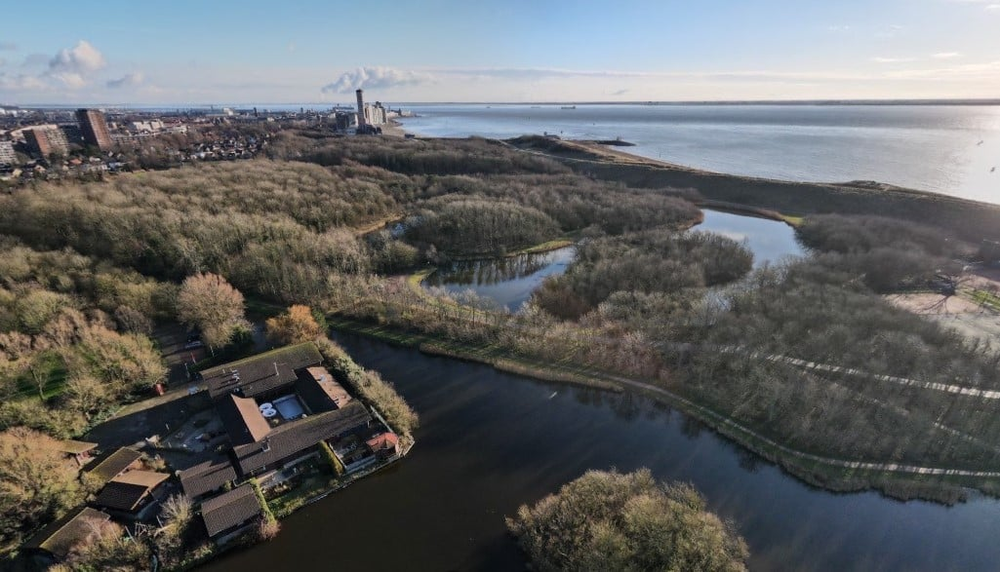
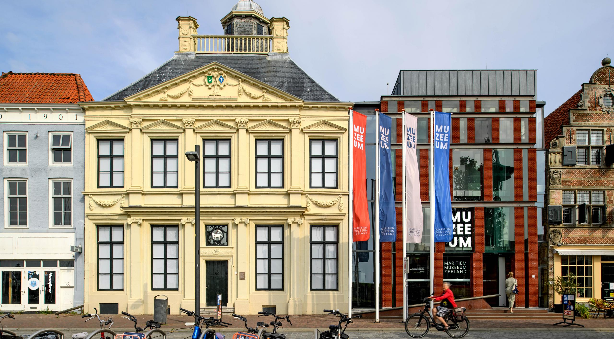
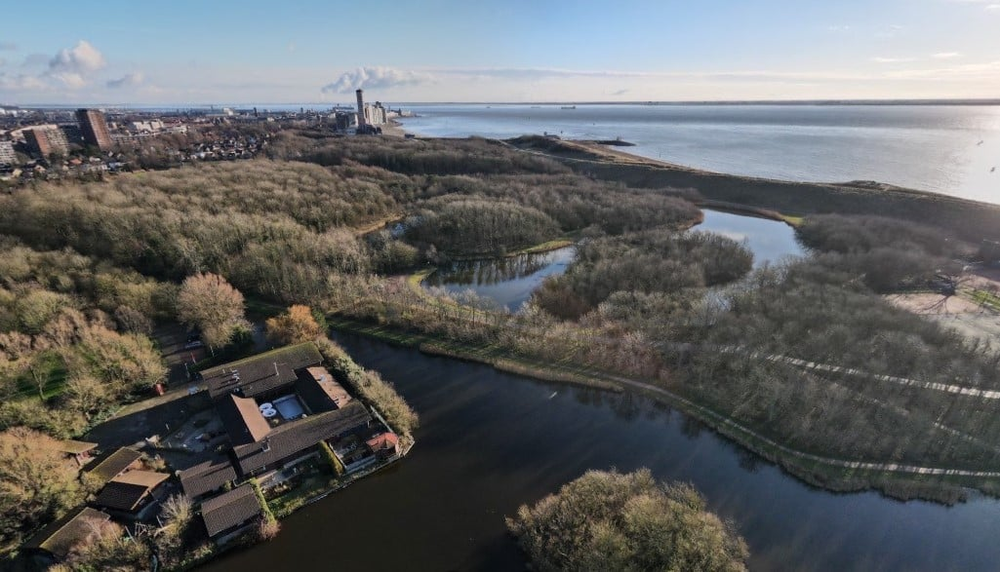